Plate 1 · Boston Marathon, 19 April 1940 · Family collection
Finishing fifth in 2:34:54, in the race that served as the final tryout for
the 1940 United States Olympic marathon team.S6
The print is placed at 1940 by the singlet lettered
BOSTON and the number 6, which match him exactly in a press photograph
taken after that race alongside the winner Gérard Côté and the fourth place
finisher Les Pawson.S13 See Plate 14.
Preface
Paul A. Donato was one of the top American road runners of the late 1930s.
He finished in the top ten at Boston four times, won the Mount Washington Road
Race in 1937, ran five national championship marathons, and was named to the
1940 United States Olympic team as first
alternate.S20S6S15
Those Games were cancelled because the war came, and he spent forty three
years as an electrician at the General Electric Riverworks plant in
Lynn.S1
Every factual sentence here carries a bracketed marker linking to the
source register at the foot of the page. Where two
sources disagree, both are given and the conflict is named rather than
smoothed over.
The Record
Every documented appearance, in order. The numeral in the margin is his
finishing place. Read down the column and you have the shape of the career:
a fast rise, four years at the top, the war, and a long quiet tail.
Before
—
1915 to 1932 · Boston, then Italy, then Boston again
Origins
Birthplace: Boston, Massachusetts
He was born in Boston on 26 October 1915, and his family almost
immediately returned to Italy with him, to
Saponara in Sicily.S22S1
He returned to the United States at the age of seventeen, after the influenza
epidemic killed his mother, two of his brothers and his sister. Given that he
had left as a baby, he was for all intents and purposes immigrating to the
United States from Italy. He had to learn American culture and the English
language.S1
In August 1937 the Manchester Union described him as an Italian instrument
maker who had lived in the United States for five years, which places his
return at about 1932.S2 By then the family was
in Roxbury, and he ran, boxed and wrestled under the colors of the Boys Club
of Boston.S9 This also settles the ARRS
rankings, which give his birth year as 1908 and are wrong by seven
years.S15 He really was twenty one on the
mountain.
1936
—
Circa April 1936 · Boston
The Cathedral Run
Earliest known photograph
The earliest image of him yet located. He is in the center, about twenty
years old, in the singlet lettered BCOB for the Boys Club of
Boston, with his arms over the shoulders of Francis Ryder and Johnny
Simkonis.S11
Plate 2 · Circa April 1936Cathedral run. L to R. Francis Ryder, Paul Donato, Johnny Simkonis.
Collection Boston Herald-Traveler Photo Morgue, Boston Public Library Arts Department Identifier 22_10_000537_0002 · Barcode 39999088103690 Object Photographic print, 166 × 218 mm Rights CC BY-NC-ND 4.0. Master TIF free to download. SourceDigital Commonwealth →
43rdBoston 3:09:14
Monday 20 April 1936 · Hopkinton to Boston
His First Boston Marathon, Hidden Under a Misspelling
3:09:14 · Forty third of 70 finishers · Short course
He is in the association’s results file for 1936, but under the name
“Paul Decato”, which is why this race went unrecorded for
many years.S20
21stNational AAU
Saturday 30 May 1936 · Mount Vernon to Washington
His First National Championship, and an Olympic Trial
3:10:15 · Entered as number 83, Boston Boys’ Club
The fifth annual Evening Star Marathon, which was simultaneously the
national AAU championship and the United States Olympic marathon trial
for the Berlin Games. The winner, William McMahon, took a place on the
team with 2:38:14.4. Johnny Kelley was second.S16
Donato was about twenty, entered under the Boston Boys’ Club, and
finished twenty first in 3:10:15. It is the earliest race of his yet
documented, and it means he stood in an Olympic trial field four years
before the one he nearly made.S16
1937
20thBoston 3:01:15
Monday 19 April 1937 · Hopkinton to Boston
His First Boston
3:01:15 · Twentieth of 85 finishers · Short course
His second Boston.S20 He was twenty one, four
months from winning Mount Washington, and eight minutes quicker than the year
before. Twelve months later he would take another nineteen minutes off it.
20thBoston 3:01:15
Monday 19 April 1937 · Hopkinton to Boston
His 2nd Boston Marathon
3:01:15 · Twentieth of 85 finishers
His 2nd Boston Marathon, and eight minutes quicker than the year
before.S20 He was twenty one, four months from
winning Mount Washington. Twelve months after this he would take another
nineteen minutes off it and finish fifth.
13thNational AAU
Saturday 12 June 1937 · Mount Vernon to the White House
National A.A.U. Marathon Championship
Thirteenth · Entered as number 17, Roxbury Boys’ Club
The sixth annual Evening Star Marathon, run over the full 26 miles 385
yards. Mel Porter of the Millrose A.A. took the lead near the sixteen mile
post, was passed by Pat Dengis, then overhauled him again crossing
Arlington Memorial Bridge and won by almost half a mile in 2:44:42.
Clarence DeMar, then forty nine, was fourth.S8
Donato finished thirteenth, an improvement of eight places on the previous
year.S16 The family holds the framed panoramic
photograph of the assembled field, and he is in it: eleventh from the
left of the second group, in the Boys Club singlet, wearing the number 17
that the Evening Star entry list assigns him.S16
That identification also dates the photograph, because he wore 83 in 1936.
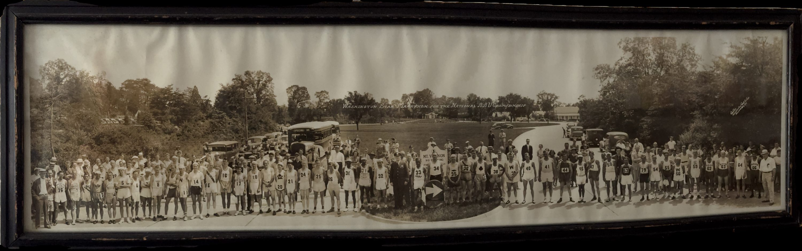
Plate 3 · The assembled field · 12 June 1937Washington Star Marathon for the National A.A.U. Championship
Object Framed panoramic photograph, photographer’s signature lower right Held Family collectionS14 Dating No year appears in the photographer’s caption. The year is
established by his race number: 17 in 1937, 83 in 1936.S16
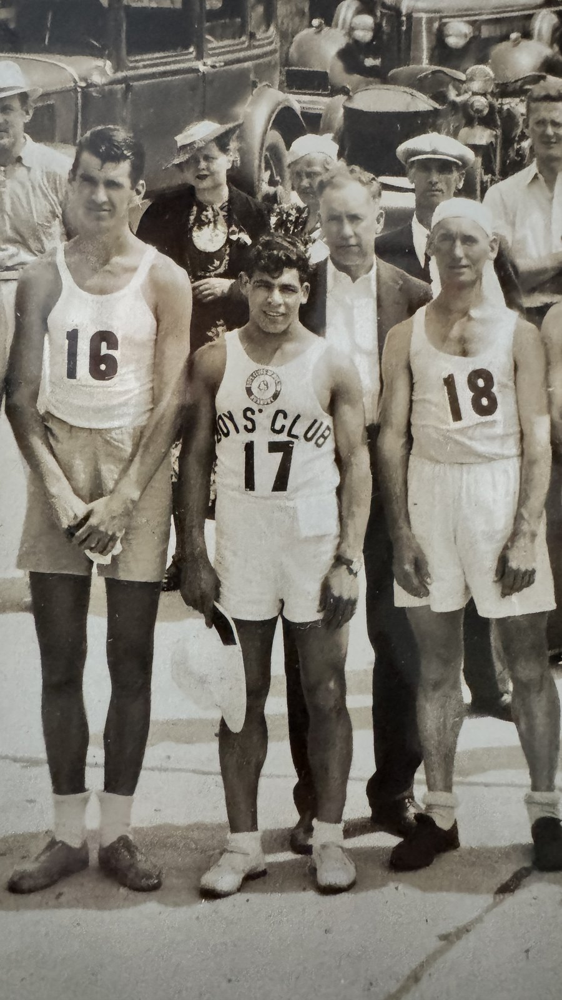
Plate 3, detail · Number 17
Donato in the panorama, magnified. The singlet reads BOYS’ CLUB
over the number 17, and the face matches the 1936 Cathedral run print
and the 1937 Mount Washington photograph.
Source Detail from Plate 3, enlarged three times from the original scan Corroborates the Evening Star entry list of 12 June 1937,
“17. Paul Donato, Roxbury Boys’ Club”S16
Plate 4 · The start
Object Press photograph Source Historic ImagesS13 Note Same event as Plate 3. Donato has not been identified in the frame.
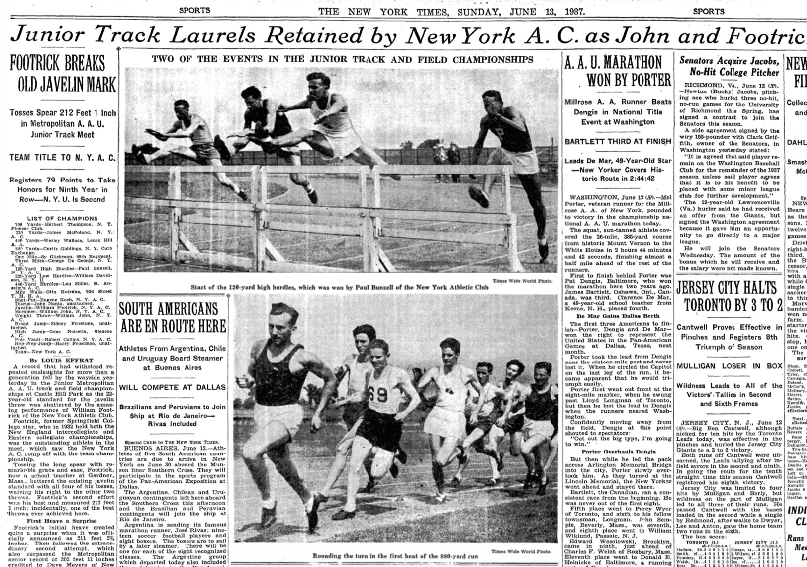
Plate 5 · The reportA.A.U. Marathon Won by Porter. Millrose A.A. Runner Beats Dengis in
National Title Event at Washington.
Publication The New York Times, Sunday 13 June 1937, sports pages Held Family collection, digital copyS8 Note The Times report names only the first eleven. His thirteenth place
comes from the Evening Star’s own order of finish.S16
1stMount Washington
Saturday 14 August 1937 · Mount Washington, New Hampshire
He Wins the Mount Washington Road Race
1:16:24 · Number 2 · 44 starters · Age 21
The second running of the race up the Mount Washington carriage road, then
still dirt. Eight miles at a twenty two degree average incline, from the
Glen House on the Pinkham Notch road to the summit, an ascent of about
4,800 feet.S5 The modern race measures 7.6
miles.S1
Francis Darrah of Manchester, the defending champion and record holder, led
at the five mile mark. Above the halfway house Darrah’s stomach gave
out and he walked the last mile. Donato went by and won in 1:16:24, in
front of more than four hundred spectators who had come up on a special cog
railway train. Italo Amicangioli was second in 1:19:25 and William Honeywell
third in 1:19:41.S2S3
He is a swell runner and a fine sport, I’m sorry his stomach slowed him up.
At the summit Darrah himself handed over the cup, with Governor Francis P.
Murphy of New Hampshire and his daughter Eleanor looking on.S4
A second photograph of the presentation, published by the Boston Globe the
following summer, shows Donato with the governor and with Dr. George S.
Foster of Manchester, the man in whose honor the race was
founded.S5 Paramount and Pathé newsreel
cameras filmed the ceremony.S12
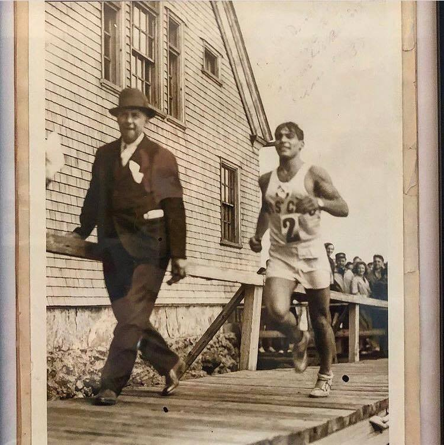
Plate 6 · The winner, 1937
Running in the Boys Club singlet, number 2. The Boston Globe published
this photograph the next summer captioned simply
PAUL DONATO, Winner of 1937 Race.S5
Object Photographic print, framed, with an inscription in the sky at upper right
that has not been transcribed Held Family collectionS14
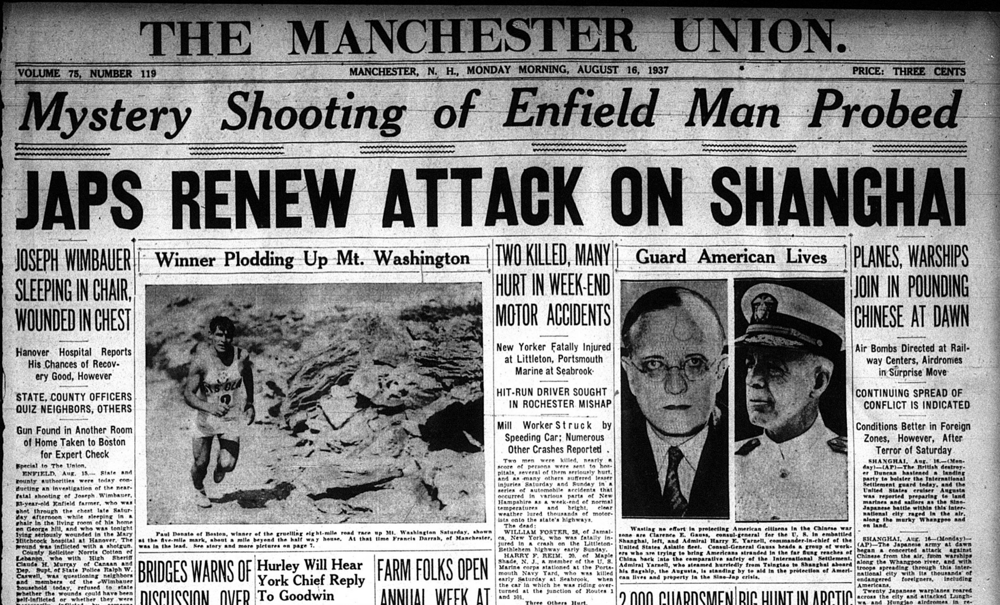
Plate 7 · Front page · 16 August 1937Paul Donato of Boston, winner of the gruelling [sic] eight-mile road race up Mt.
Washington Saturday, shown at the five-mile mark, about a mile beyond the half
way house. At that time Francis Darrah, of Manchester, was in the lead. See
story and more pictures on page 7.
Publication The Manchester Union, Manchester, New Hampshire Issue Volume 75, Number 119 · Monday morning, 16 August 1937 · Page 1 Headline “Winner Plodding Up Mt. Washington” Held Family collection, digital copyS3
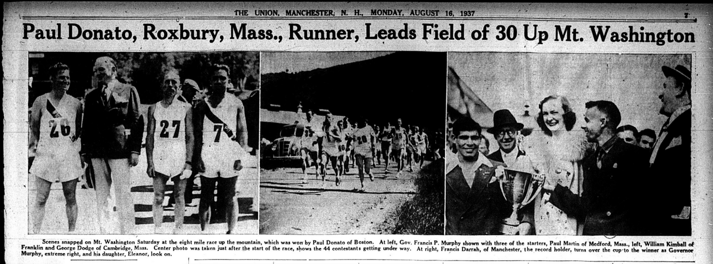
Plate 8 · Page 7 · 16 August 1937Scenes snapped on Mt. Washington Saturday at the eight mile race up the
mountain, which was won by Paul Donato of Boston. At left, Gov. Francis P.
Murphy shown with three of the starters, Paul Martin of Medford, Mass., left,
William Kimball of Franklin and George Dodge of Cambridge, Mass. Center photo
was taken just after the start of the race, shows the 44 contestants getting
under way. At right, Francis Darrah, of Manchester, the record holder, turns
over the cup to the winner as Governor Murphy, extreme right, and his daughter,
Eleanor, look on.
Publication The Union, Manchester, New Hampshire Issue Monday, 16 August 1937 · Page 7 Headline “Paul Donato, Roxbury, Mass., Runner, Leads Field of 30 Up Mt. Washington” Note The right hand photograph is one of only two known images of the 1937
trophy: a large two handled loving cup. Held Family collection, digital copyS4
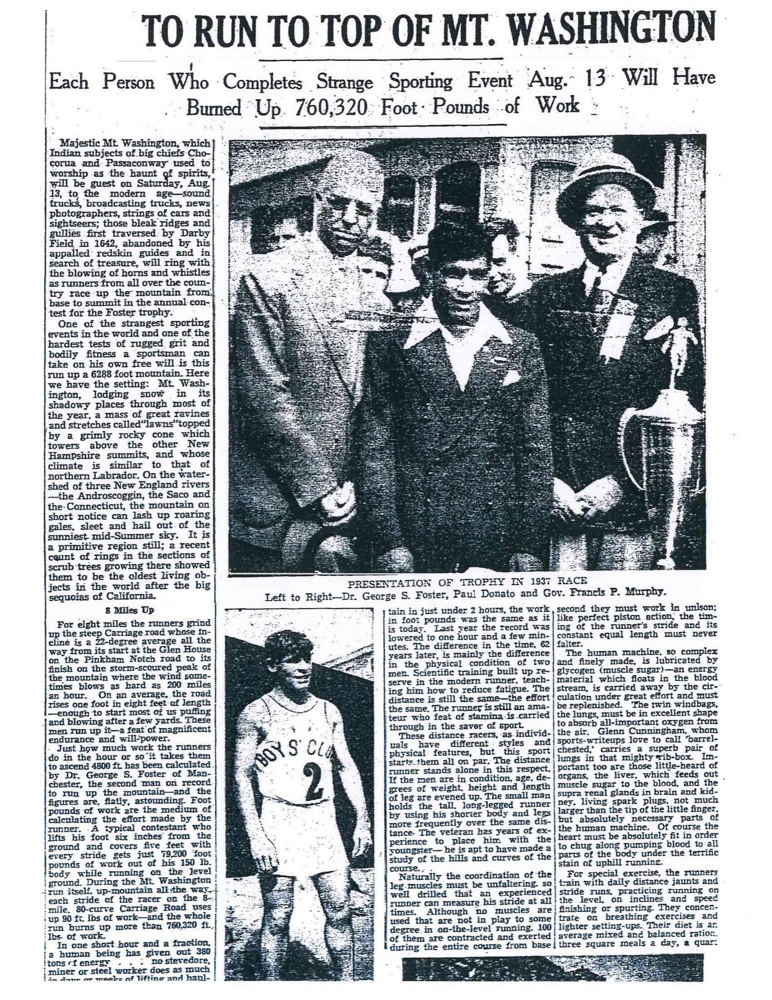
Plate 9 · Boston Globe feature · 7 August 1938PRESENTATION OF TROPHY IN 1937 RACE. Left to Right: Dr. George S. Foster,
Paul Donato and Gov. Francis P. Murphy.
Publication Daily Boston Globe, Sunday 7 August 1938, page C7 Headline “380 Tons of Energy Required to Run to Top of Mt. Washington.
Each Person Who Completes Strange Sporting Event Aug. 13 Will Have Burned Up
760,320 Foot Pounds of Work” Note Published as a preview of the 1938 race, but both of its Donato
photographs are from 1937. Also the source for the course description and for
Dr. Foster being the second man on record to run up the mountain. Held Family collection, digital copyS5
Moving image · Paramount and Pathé newsreel · Sherman Grinberg LibraryHe was filmed that day
Reel 1 · 47 seconds · Silent, black and whiteRailroad car comes up Mount Washington, people at peak greet winner of
race / MS men around table of trophies, winner Paul Donato accepts trophy /
MS PAN of people around Donato who holds his trophy.
Collection Sherman Grinberg Library · Paramount and Pathé newsreelS12 Identifier SR001951_02_02 · Getty asset 599719892 Slate The production slate appears on screen at 00:32 and reads
ADD SCENES — ISSUE #4, “ROAD RACE” (#6497), Mt. Washington, N.H.,
Semi cu pan Gov. Murphy of Michigan to Paul Donato, winner of race, to
Gov. Murphy’s daughter. AUGUST 1937 Object Newsreel footage, 1920 × 1080 master, shown here as a
1280 × 720 transcode Rights Reproduced by permission of The Sherman Grinberg Library.
All rights reserved. Not to be reused from this page. SourceGetty asset record →
01:00Reel 2 · Same shoot
Getty 599719446
Title card “Run Race Up Highest Peak in Northeast”. Runners climbing,
a car following the field, athletes passing the camera. He won this race.
View at Getty →
00:31Reel 3 · Same shoot
Getty 1291629514
Runners racing down a road past parked cars, tilt up to Mount Washington behind.
View at Getty →
00:25Reel 4 · 8 August 1936 · The year before
Getty 1270273565
The inaugural race, eight men at the start beneath the
Mount Washington Auto Road sign, and Francis Darrah, who won it. The same course
a year before Donato took it from him.
View at Getty →
Correction to the catalog record
Two errors in Getty’s metadata
All three 1937 clips are dated 1 August 1937 and placed at North Conway.
The race was run on Saturday 14 August 1937 on the Mount Washington
carriage road.S3S4
Getty also names the presenter as the daughter of “Governor Frank
Murphy”, following the newsreel’s own slate. Frank Murphy was the
governor of Michigan and had no children. The governor present was
Francis P. Murphy of New Hampshire, and the daughter was
Eleanor Murphy.S4
A note on what may be shown
One reel by permission, three by link
The footage survives in the Sherman Grinberg library, which Getty
represents.S12The Sherman Grinberg Library
has granted this archive permission to reproduce Reel 1, the summit
trophy presentation, and it plays above. That permission covers this page
only and does not extend to reuse from it. Reels 2, 3 and 4 remain
rights-ready editorial assets with no embed option, so they stay cataloged
and linked rather than reproduced.
10thToronto 2:58:25
Saturday 18 September 1937 · Toronto, Ontario
Toronto Marathon
2:58:25
A month after the mountain, and his first race outside the United States as
far as the record shows.S15
13thPort Chester
Tuesday 12 October 1937 · Port Chester, New York
Port Chester Marathon
2:58:37
The first of three Port Chester marathons he ran over four
years.S15
Three days beforehand the United Press ran a series in which contenders
assessed their own chances. Donato wrote his own, and it is the longest piece
of his own voice yet found. He was twenty two.S25
I have been training a great deal and have run the full course from
Hopkinson to Boston on four occasions. My times have been very good.
Walking has been an important part of my training. I have walked twenty
miles every Monday since the middle of January.
I came to this country from Italy about five years ago. I am 22, weigh 140,
and am unmarried.
I pick Pat Dengis, Gerard Cote, and Johnny Kelley to finish in that order
but there’s a good chance I can beat them all. I will eat a pound of
lump sugar before the race and drink tea containing a great deal of sugar
during the race.
Paul Donato, written for the United Press, 16 April 1938S25
Plate 10 · Signed by him
Finishing in the rain in the Boys Club of Boston singlet. Inscribed in his own
hand across the print: Boston Marathon, 5th place finish, and signed
Paul Donato.
Object Photographic print, inscribed and signed Held Family collectionS14 Dating Placed at 1938 rather than 1940, his other fifth place, because he
wears the Boys Club singlet here and the BOSTON singlet in the
photographs known to be from 1940 (Plates 1 and 13). This is inference from the
photographs, not a documented date.
3rdSalisbury Beach
Monday 30 May 1938 · Salisbury Beach, Massachusetts
Second · Darrah won in 2:08:14.8 · 15 starters, 10 finishers
This was the vertical mile: twelve and a half miles up the Pikes Peak
Highway from Crystal Creek to the summit, finishing exactly one mile higher
than the start.S17
Francis Darrah won it, as he had won the mountain in 1936 and would win it
again that August. Donato was second, about six minutes
back.S2S17
A Boston runner traveling to Colorado to race in 1938 was an unusual
undertaking, and this is the only race of his yet documented west of the
Mississippi.
Paul was offered money to compete in the race. A good natured man, he gave
part of it to Francis Darrah and another training partner so they could travel
and race together. Unfortunately for Paul, Francis beat him in the race. We do
not know if Francis shared the prize money, if any.
The obituary adds the texture of the drive west:S1
They sent him $300 for travel expenses, but instead of using it on himself,
Dad invited two other runners to go out there with him.
The trio were so tight for money that they rode west in Mr. Donato’s
car, slept by the side of the road, and ate beans by an open fire.
The obituary also gets two details of the race wrong. It dates it to 1937, and
it says Pat Dengis of Baltimore, beat out Mr. Donato to win.
Contemporary newspapers place the race on 4 July 1938 and name the winner as
Francis Darrah, who is the man in the sash in the photograph
below.S1S17
The same obituary misreports his own name in its headline as Paul G. Donato.
He was Paul A. Donato. Paul G. Donato was his son.
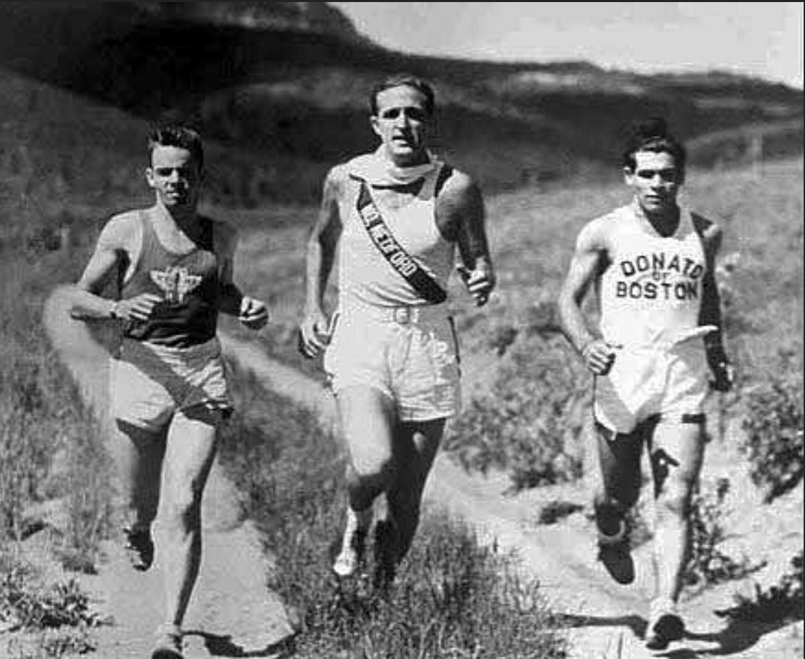
Plate 11 · Colorado, 4 July 1938Darrah (center) and Donato (right) competing at the Vertical Mile in Colorado
Donato at the right in a singlet lettered DONATO OF BOSTON, Darrah in the
center wearing a sash. Names printed on singlets were how a promoted field was
labeled for spectators and press.
Object Photographic print Held Family collectionS14 Identified by the same image published with the caption above in
Dave Dunham’s history of the Mount Washington raceS2 Note This plate was listed as unidentified until September 2026. The
original print and its photographer remain unlocated.
5–10
Wednesday 10 August 1938 · Old Orchard Beach, Maine
Old Orchard Beach Ten Miles
Somewhere between fifth and tenth
The field included Clarence DeMar, Les Pawson and Hawk Zamparelli. Pawson
finished third in 52:44.2. The published account names the fifth through
tenth finishers as a group, Donato among them, without ordering
them.S10
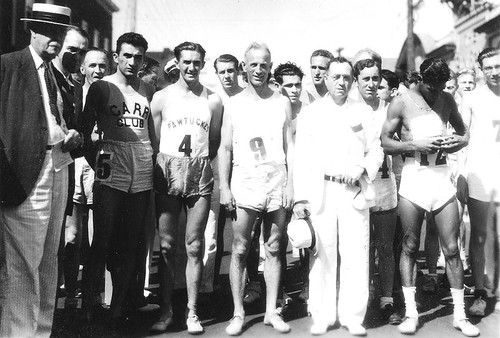
Plate 12 · The start · 10 August 1938
Top competitors before the start. The published caption places
Paul Donato off Clarence DeMar’s left shoulder.S10
Courtesy Old Orchard Beach Historical Society, which trades as the Harmon Museum Published byMaine Running Photos → Note Which figure is Donato has not been independently confirmed.
2ndMount Washington
Saturday 13 August 1938 · Mount Washington, New Hampshire
Mount Washington, Defending
1:19:10 · Darrah won in 1:15:27
Three days after Old Orchard Beach he went back to Mount Washington and lost
to Darrah, who took the title back and lowered the mark. Amicangioli was
third again in 1:20:17.S2
This was the third running of the race. Donato’s name is inscribed on
the original winner’s trophy, which the race history names as the
Foster Trophy and which was still being presented in
1961.S1S19
6thNational AAU
Sunday 6 November 1938 · Yonkers, New York
National A.A.U. Marathon Championship
2:50:33
His third national championship and his best placing in one to date, sixth
over the full distance.S15
1939
6thBoston 2:34:25
Wednesday 19 April 1939 · Hopkinton to Boston
Boston Marathon, and the First Olympic Qualifier
2:34:25 · Ellison “Tarzan” Brown won in 2:28:51.4
Sixth, behind Brown, Heinicke, Young, Dengis and Pawson.S7S15
This race was also the first of the three counting toward selection of the
1940 United States Olympic marathon team.S6
This is his fastest Boston Marathon. The association’s own results file
gives 2:34:25 and lists him sixth, behind Pawson at
2:33:57.S20 The ARRS rankings give 2:34:25.2
and Dave Dunham’s history 2:34:36; the association’s record is
preferred.S15S2
He should not have started. He had come down in training and carried a
badly bruised, indigo coloured knee to the line, and nearly everyone advised
him not to run. He ran anyway. Michael Ward records that he suffered through
the first three quarters of the race and then found the closing miles free of
it.S23
He gave his own account of it a year later, under his own byline, and
characteristically played it down:
Although I slipped from fifth to sixth last year, I did pretty well because
a leg injury slowed me up.S25
4thSalisbury Beach
Tuesday 30 May 1939 · Salisbury Beach, Massachusetts
Salisbury Beach Marathon
2:45:31
His second running of the race, a place better and six minutes
slower.S15
?
Sunday 9 July 1939 · New Bedford, Massachusetts
Irish American A.C. Twelve Miles
Second annual · 100 entered, 50 started, 25 finished
Run in heat that halved the field twice over: a hundred entered, fifty came to
the line and only twenty five finished. The field included Hawk Zamparelli,
Clarence DeMar, Jock Semple, George Durgin and Anthony Medeiros. Les Pawson
entered and did not show.S23
His placing is not given.
Placing sought, New Bedford Standard Times, 10 July 1939
5thPort Chester
Saturday 7 October 1939 · Port Chester, New York
Port Chester Marathon
2:58:20
Eight places better than two years before, on effectively the same
time.S15
10thNational AAU
Sunday 12 November 1939 · Yonkers, New York
National A.A.U. Marathon Championship
2:47:32
The second of the three Olympic qualifying races. He placed 10th, which was exactly
enough: the American Olympic Committee counted only the first ten finishers
of each qualifier toward selection.S6
A United Press wire report published the next day names him in the first ten
in finishing order, after William Wicklund, Don Heinicke, George Durgin and
Frank Kelley.S18 At 2:47:32 over the full
distance, this is the fastest true marathon he is recorded to have
run.S15
Others in the first 10 included in the following order: William Wicklund,
New York; Don Heinicke, Baltimore; George Durgin, Boston; Frank Kelley,
Philadelphia, and Paul Donato, Roxbury, Mass.
An indoor memorial race for Pat Dengis, the Baltimore marathoner who had been
killed in an aeroplane crash the year before. The B.A.A. filled the field by
invitation and announced seven names: Tarzan Brown, Leslie Pawson, Johnny
Kelley, Lou Gregory, Frank Darrah, George Durgin and Paul
Donato.S24 Pawson won it in a meet record
15:05.4.S28
Being named to that seven is the measure of where he stood in February 1940.
Austen Lake of the Boston Evening American caught what the race was for.
For tradition, mes ames, is the soul of the B. A. A.! A dip of the knee to
old memories, a flirt of the hand to the past, a kindly kiss down the
corridor of the years, an auld lang syne to vanished good fellows.
Thus this three-mile oddity! With such artisan athletes as Johnny
[Kelley], Leslie Pawson, Tarzan Brown, Frank Darrah, Paul Donato,
George Durgin and Lou Gregory twitching a sad cavalcade around the
Garden’s wooden saucer, men who suffered gas pains, blurred vision and
ankle-aches with Dengis each Patriots’ Day through the years.
Austen Lake, Boston Evening American, 9 February 1940. The scan reads
“Johnny Raley”, a misprint for Kelley.S24
His placing is not known. The paper previewed the race three times and
never printed a summary, and no other digitised paper carries one.
Result sought, Boston Globe or New York Times, 11 to 12 February 1940
4thNorth Medford
Saturday 23 March 1940 · Medford, Massachusetts
North Medford Twenty Miles
Fourth · Les Pawson won by more than four minutes
The traditional tune up for Boston, run over the roads of Medford, Stoneham,
Somerville and Malden. Pawson beat the whole field by more than four minutes,
into a stiff head wind. Behind him: Don Heinicke second, Gérard
Côté third, Donato fourth, George Durgin fifth and Johnny Kelley
sixth.S28
Reporting the same race, Michael Ward preserves the plainest of the names the
Boston papers hung on him.S23
Two weeks later he named the race himself as part of his preparation:
The North Medford race in which I finished fourth has helped to condition
me.S25
5thBoston 2:34:54
Friday 19 April 1940 · Hopkinton to Boston
The Final Tryout
2:34:54
By 1940 he was rated. Five days out the Globe published a preference poll that
had him fourth in the country, behind Pawson, Brown and Heinicke and
ahead of Côté and Kelley. The Herald ran its own board of seventeen road racing
experts, which put him fourth again on 110 points out of a possible
170.S23
He was on that panel himself. Will Cloney seated him among the seventeen
experts, alongside Hawk Zamparelli, and the two of them were barred from voting
for themselves. At twenty four a foundry hand from Roxbury was considered
enough of an authority on road racing for a Boston paper to ask him who would
win.S23
If past performances, of both runners and experts, mean anything, then
Pawson, Brown, Heinicke, and Donato will be in the first five on Friday. It
will be fun to see how the thing turns out.
Will Cloney, Boston Herald, five days out. Donato finished fifth.S23
Two weeks out he wrote for the United Press again. The swagger of 1938 is
gone and something steadier has replaced it.S25
Road work three times a week and working in a foundry have put me in top
physical condition.
This will be my fifth B.A.A. start. In my first try in 1936, I was 43d. The
next year I advanced to 20th. I sure hope to be somewhere in the first five
this patriot’s day.
The 1940 Boston Marathon doubled as the final Olympic tryout. The official
result recorded by the American Olympic Committee reads:S6
1. Gerard E. Cote, 2 hrs. 28 min. 28⅗s., St. Hyacinthe, P.Q., Canada ·
2. John A. Kelley, 2 hrs. 32 min. 3s., Arlington, Mass. ·
3. Don Heinicke, 2 hrs. 32 min. 21s., Baltimore, Md. ·
4. Leslie S. Pawson, 2 hrs. 33 min. 9s., Pawtucket, R.I. ·
5. Paul Donato, 2 hrs. 34 min. 54s., Boston, Mass.
American Olympic Committee Report, 1940, page 50S6
Côté, the winner, was Canadian and therefore not eligible for the American
team, so the whole team had to be chosen on average placings across the
three races.S6
Afterwards, with his head on the rubbing table, he told the reporters he was
finished. Michael Ward records the moment, and the nickname the press had hung
on him:S23
Yes, this is my last Marathon. Why stay in it? I’ve finished fifth
twice now, and sixth in another try. It isn’t worth the time and
trouble any more. I’m quitting now, and having some fun for a change.
Say, what do you have to do to win this race now, run the course in 2:20?
That is what the Boston sports desks called him. Ward reports it as the
black-eyed, oft-styled Vest Pocket Hercules, and oft-styled is
the telling half: by 1940 the name was already worn smooth from
use.S23
It is the best of a long run of names, and every one of them is reaching for
the same thing, a heavyweight’s chest and shoulders on a man built for
distance.
the chunky distance plodder, 1937S2 ·
the stocky little Paul Donato of Roxbury, 1938S2 ·
the youthful Roxbury Boys’ Club plodder, 1938S24 ·
artisan athlete, 1940S24 ·
chunky Bostonian, 1940S24 ·
the Roxbury strong boy, 1940S23 ·
the Roxbury foundry hand, 1940S23
He weighed a hundred and forty pounds, and the figure is his own: he put
it in print himself, unprompted, in the middle of an article about his own
chances.S25 Set that against the names above
and they stop being unkind. They are describing a small, heavily built man
who ran with the best in the country. No record of his height has been
found.
Height sought
He ran Boston five more times.
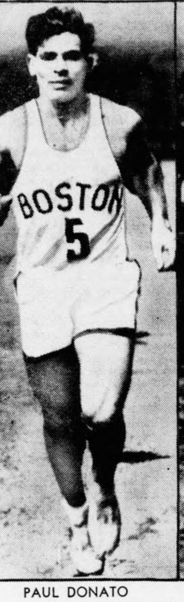
Plate 13 · Boston Evening American · 18 April 1940BIG FIVE — Three former winners and two of tomorrow’s favorites are
pictured above. If form runs true they’ll finish 1-2-3-4-5 in tomorrow’s
Patriots’ Day grind, Brown first, Pawson second.
Five portraits ran across the top of page 44 the day before the race: Johnny
Kelley, Tarzan Brown, Leslie Pawson, Paul Donato and Don Heinicke. The
paper picked him to finish in the top five, and he did.
Publication Boston Evening American, Thursday 18 April 1940, page 44S24 Note A file portrait rather than a 1940 race photograph: the singlet reads
BOSTON over number 5, where he wore 6 on the day.
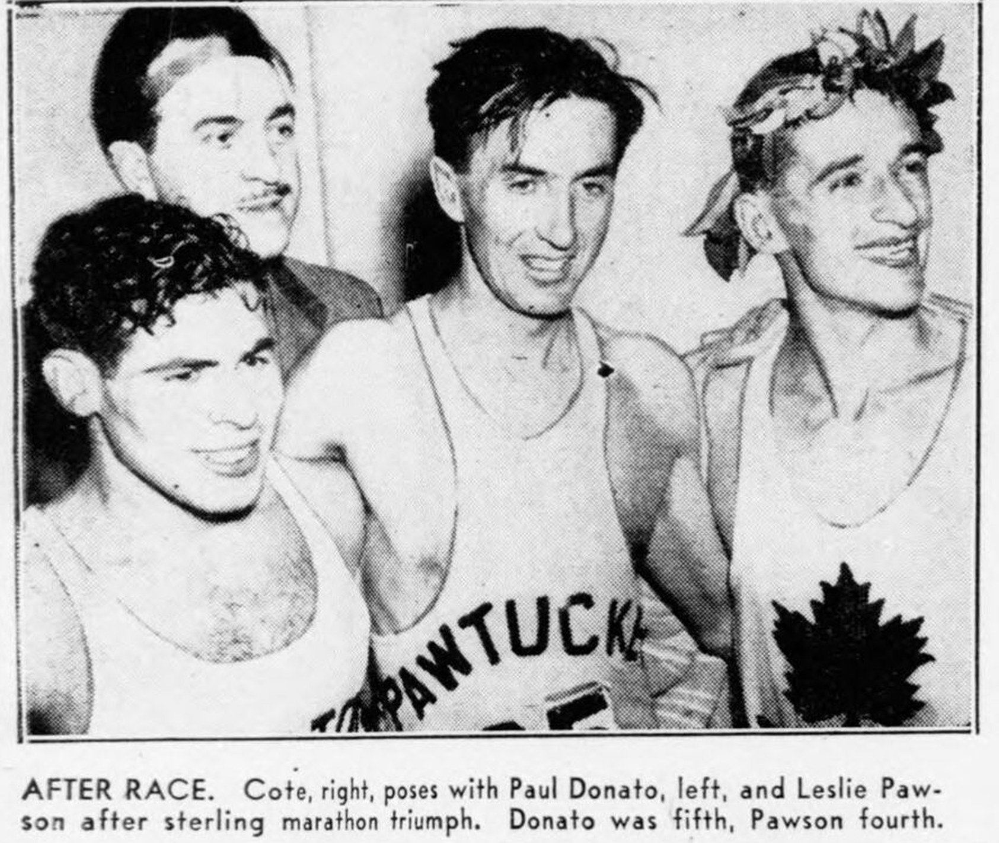
Plate 14 · Boston Evening American · 20 April 1940AFTER RACE. Cote, right, poses with Paul Donato, left, and Leslie Pawson
after sterling marathon triumph. Donato was fifth, Pawson fourth.
Donato at the left, Pawson of Pawtucket in the center, and the winner
Gérard Côté in the laurel wreath. This is the photograph that dates
Plate 1.
Publication Boston Evening American, Saturday 20 April 1940, page 26S24 Note The same sitting was later sold as an uncaptioned press photograph
carrying a modern watermark.S13 This is the
published original, dated and captioned by the paper that took it.
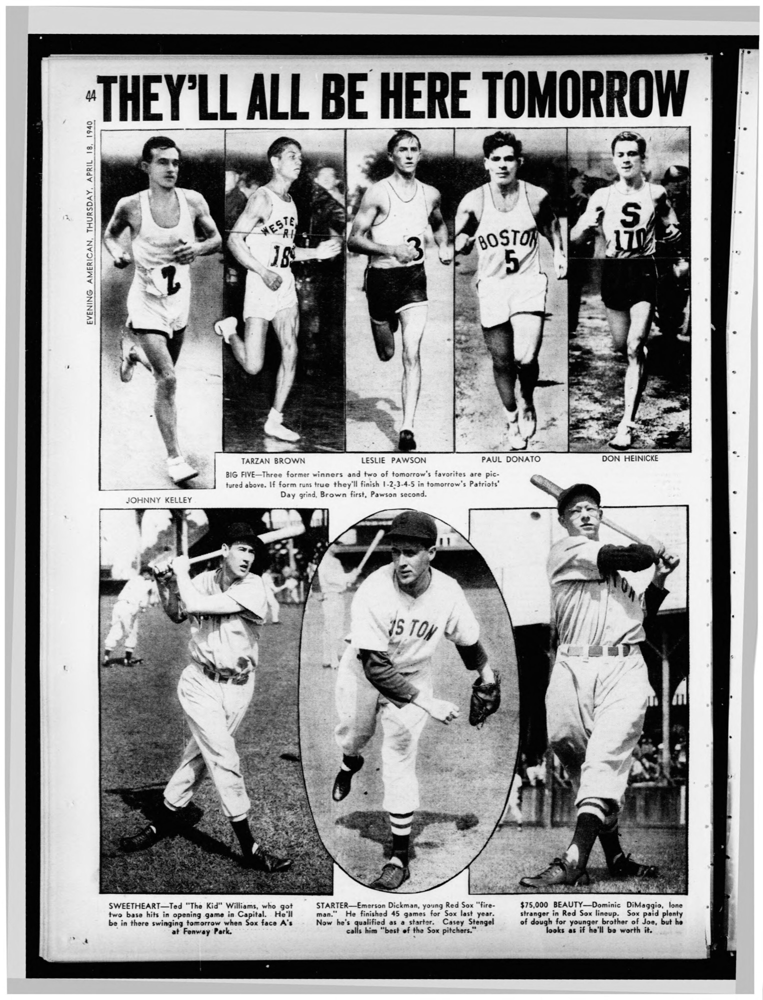
Plate 15 · Boston Evening American · Page 44 · 18 April 1940THEY’LL ALL BE HERE TOMORROW
The whole page, which is worth seeing whole. The five marathon men run
across the top: Johnny Kelley, Tarzan Brown, Leslie Pawson,
Paul Donato and Don Heinicke. The paper gave the rest of the page
to the Red Sox: Ted Williams at the left, in his second season and
captioned SWEETHEART; Emerson Dickman in the oval; and Dominic
DiMaggio, the $75,000 BEAUTY and lone stranger in Red Sox
lineup.
On the eve of Patriots’ Day 1940 a Boston paper laid out the men the
city was going to watch the next afternoon, and he was one of them,
printed the same size as Ted Williams.
Publication Boston Evening American, Thursday 18 April 1940, page 44 Held Internet Archive, item bostonamerican19400418S24 Note Plate 13 is the Donato portrait enlarged from the top strip of
this page.
AltFirst alternate
1940 · Games of the XIIth Olympiad, Helsinki
Named to the Olympic Team
The Games were never held
The team was picked on a three race point system announced in advance and
mailed by registered mail to every known prominent marathoner in the
country: the 1939 Boston Marathon, the 1939 national championship at
Yonkers, and the 1940 Boston Marathon as final
tryout.S6
Donato placed sixth, tenth and fifth. On raw placings that is 21 points and
fourth overall, eight behind Pawson and four behind Kelley. On the
committee’s own adjusted table, which removed ineligible runners and
moved everyone up, it is 13 points, and he is still
fourth.S7S6
Either way he finished one place outside the team and was named the first of
the three alternates.
The team is, therefore, as follows: Don Heinicke, Baltimore, Md.
· Leslie S. Pawson, Pawtucket, R.I. ·
John A. Kelley, Arlington, Mass.
Alternates: Paul Donato, Boston, Mass. ·
Fred A. McGlone, Roxbury, Mass. ·
George L. Durgin, Beverly, Mass.
American Olympic Committee Report, 1940, page 50S6
Rule four of the selection plan added that
no alternate will be taken to the Olympic Games unless one of those named
to the team is unable to compete.S6 The
report carries the line
the celebration of which was prevented by war on its cover. Helsinki
did not host the Games until 1952.
Plate 16 · Cover
Title Report of the American Olympic Committee, 1940 Covers Games of the XIIth Olympiad, Helsinki, Finland, and Vth Olympic
Winter Games, Garmisch-Partenkirchen, Germany Cover line “The celebration of which was prevented by war” Price One dollar
Plate 17 · Page 50
The primary document. Donato appears three times: fifth in the 1940 final
tryout, fourth in the selection scoring table, and first among the named
alternates.
Publication Report of the American Olympic Committee, 1940, page 50 Held Family collection; also public at the LA84 FoundationS6 Note The scoring table on this page shows adjusted positions among the
seven candidates under consideration, not raw finishing places. For the raw
places see Plate 18.
Plate 18 · The selection arithmetic
Raw finishing places across the three qualifying races, and the final point
list. Donato: sixth at Boston in 1939, tenth at Yonkers, fifth at Boston in
1940. Total 21. Fourth overall.
Object Page from an unidentified printed history Held Family collection, digital copyS7 NotePublication and page sought
11thPort Chester
Saturday 12 October 1940 · Port Chester, New York
Port Chester Marathon
3:16:55
Eighteen minutes slower than the year before, and his slowest recorded
marathon.S15
11thNational AAU
Sunday 10 November 1940 · Yonkers, New York
National A.A.U. Marathon Championship
2:50:06 · Full distance
His fifth and last national championship, and the first he finished outside
the top ten.S15
1941
2ndCathedral Club
Saturday 12 April 1941 · South End to the Strandway
The Race He Should Have Won
Second · Number 2, General Electric · 75 starters
The thirty first annual Cathedral Club ten mile road race, starting at the
clubhouse on Union Park Street in the South End and running out by the
Strandway. Seventy five men entered. Les Pawson was number 1 and Donato was
number 2.S24
It was a handicap race, and Pawson was the only man off scratch. The
officials sent him away a minute early by mistake. Pawson won it, and beat
Donato home by something between a hundred and a hundred and twenty five
yards, inside the minute he had been given in
error.S23
It was agreed afterwards that without the mistake Donato would have won. He
had no intention of protesting.S23
Neither wire report of the race mentions the false start or any protest, which
is exactly what you would expect: there was nothing to report because he would
not make it a story.S18 The finishing order was
Pawson, Donato, Fred McGlone, Francis Ryder and Edward Cook, and Pawson’s
51:58 took forty four seconds off Tarzan Brown’s course
record.S23
The officiating was poor at both ends of the course. Nobody had painted a
finish line on the road, which made a mess of the close finishes, and the
timekeepers made a worse mess still: their figures had seven men inside
Brown’s record. One official was found to have left his stopwatch
sitting in its set position.S23
Then at the end of the race, the watch readers developed astigmatism, or
something, cut 3 minutes off everybody’s time, and ha[d] seven runners
breaking Brown’s record.
Will Cloney, Boston Herald, reported as 13 April 1941, page 28, via WardS23
His remark survives because a Boston reporter wrote it down and Ward went back
and found it. Ward’s endnote is reported to give the Boston
Globe of Sunday 13 April 1941, page 27, though that citation has not
itself been verified.S23Globe report to be pulled and read, 13 April 1941, page 27
The Ryder who finished fourth is Francis Ryder, the same man standing with his
arm around Donato in Plate 2, five years earlier.
9thBoston 2:49:02
Saturday 19 April 1941 · Hopkinton to Boston
Boston Marathon, the Fourth Top Ten
2:49:02 · Running for General Electric Employees
His fourth and last top ten finish at Boston. By this race his club
affiliation had changed from the Boys Club of Boston to General Electric
Employees, the works team at the Lynn Riverworks plant where he had gone to
work as an electrician.S9S1
Two miles along, at Ashland, he was in the leading bunch: behind Hawk
Zamparelli, who was running on a bandaged knee, and the tight formation of Lou
Gregory, Johnny Kelley and Gérard Côté, in company with Don
Heinicke, Joe Kleinerman, Les Pawson, Scotty Rankine and Joe
Smith.S23
It was a hot day, and Will Cloney of the Herald reached for a comparison that
Ward notes he never bothered to explain.
It was plenty hot. In fact it was so hot that the runners appeared to be
running in cellophane panties.
2:51:35 · Seventeenth · On a pass from Fort Devens
He sent in his entry and then the Army took him. Michael Ward:S23
It was reported that Paul Donato had been inducted into the Army between the
time he sent in his entry and race day. Stationed at Fort Devens, in
Massachusetts, there was a chance he might make it to the marathon. As of
April 17, he had not received his superior’s permission.
Two days out, the Army had not said yes. It said yes. He got his pass, went to
Hopkinton, and ran 2:51:35 for seventeenth, a newly inducted soldier out
of Fort Devens finishing ahead of Charles Robbins, Leo Giard, William Wicklund
and Clarence DeMar.S23S20
It was his first Boston outside the top ten in five years, and the last he
would run for five more. The pre war career does not end with a decision. It
ends with a draft notice arriving between the entry form and the starting line.
1943
—
1942 to 1945 · France, Italy, Germany, North Africa
The War Years
United States Army, electrician
He was inducted in the spring of 1942, between posting his Boston entry and
race day, and went first to Fort Devens in
Massachusetts.S23 He served as an Army
electrician until 1945, in France, Italy, Germany and North
Africa.S1 He was twenty six when he went and
thirty when he came back, and those were the years that would have been the
back half of his competitive prime.
He wasn’t the same runner when he returned from the war.
The Boston Marathon was run through the war, and he is absent from the
published results for 1943, 1944 and 1945.S20
He surfaces once, in Naples, in a Stars and Stripes column of 21 September
1944 about a long distance race the Allied Sports Commission was thinking of
sanctioning. It is the only source found anywhere that gives his rank, and it
shows the Boston record had travelled with him:S27
He will be opposed by such men as Pfc. Paul Donato, four times a
finisher in the Boston Marathon first ten; Pvt. Ernest Marquez, Indian known
as Chief Hot Foot, and several others of national repute.
Jim Burchard, Stars and Stripes, Naples, 21 September 1944S27
No such race is ever reported in the paper, so it seems never to have been
run.S27Unit and service record sought
1946
35thBoston 2:57:55
Saturday 19 April 1947 · Hopkinton to Boston
Boston Marathon, Nine Years On
2:57:55
Thirty fifth, at about thirty two, roughly twenty three minutes off his 1939
time on the same course.S20 He was still
running, and no longer close to the front.
31stBoston 3:01:45
Monday 19 April 1948 · Hopkinton to Boston
Boston Marathon, 1948
3:01:45
Thirty first.S20 The 1948 Olympic team went to
Ted Vogel, Johnny Kelley and Ollie Manninen; Donato was some thirty places and
twenty five minutes from that conversation.
It was his last Boston for seven years.
53rdBoston 3:05:21
Tuesday 19 April 1955 · Hopkinton to Boston
The Last One, Seven Years Later
3:05:21 · Fifty third · Listed from Lynnfield
The family was right and the results file was misleading. Tom
Derderian’s appendices carry a line the association’s published
extract does not: 1955, 53rd, 3:05:21, P. Donato, Lynnfield,
Massachusetts.S26
The obituary always said his last race was the 1955 Boston Marathon, twenty
years after his first.S1 An earlier version of
this page treated that as unproven, and for a while as probably wrong, because
he does not appear in the association’s file after 1948. But that file is
a truncated extract for these years: 1955 lists only thirty five finishers and
stops at 2:54:12, eleven minutes ahead of him.S20
He was invisible in it, not absent from the race.
Seven years after his previous Boston, at thirty nine, he went back to
Hopkinton and ran 3:05:21. That is four minutes slower than his first Boston
nineteen years earlier, and it is the last race of his yet documented.
What he did between 1949 and 1954 is still unknown.
Racing 1949 to 1954 sought
Undated
9
Hopkinton · Year not established
A Start He Is In
Boys Club of Boston singlet, number 9
The field going away from the line at Hopkinton, crowd pressed to the kerb,
bare trees. He is in the middle of it in the BOY’S CLUB singlet
wearing number 9, and the face matches the 1936 Cathedral run print and
the 1937 Mount Washington photograph.
The year is not established. Two things narrow it. He wore the Boys Club
singlet from his first Boston in 1936 until about 1940, when he appears in a
singlet lettered BOSTON, and from 1941 he ran for General Electric. And the
numbers already known do not fit: 6 in 1940, and reportedly 15 in 1938
and 5 in 1941. That leaves 1936, 1937 or 1939 as the likely years, and
a number as low as 9 suggests a runner the organisers already rated, which
points away from his first two.
Also in frame: a runner in a MILLROSE singlet at number 3, and a
winged-wheel emblem on number 15.
Year sought
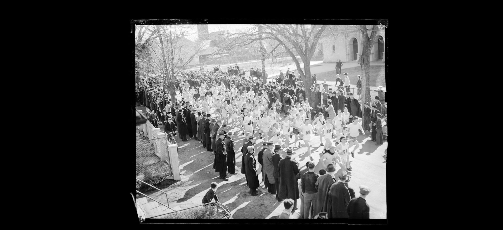
Plate 19 · The start at Hopkinton
Object Photographic negative, edges of the film visible in the scan Held Family collectionS14 Note Not the Leslie Jones negative catalogued as the 1939 start, which
shows a rural road with the field already strung out. This is a different
photograph.
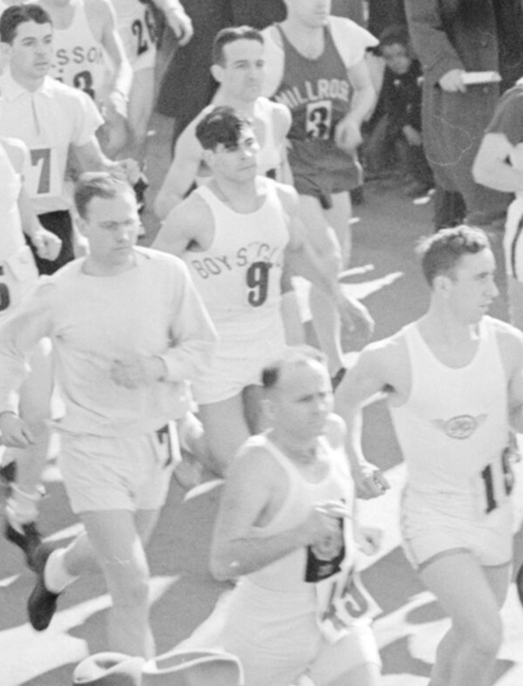
Plate 19, detail · Number 9
Source Detail from Plate 19 Legible “BOY’S CLUB” above the number 9; “MILLROSE”
on the runner behind at number 3
After
—
Beyond 1970
Closing Note
Where this archive stops
He lived in Lynnfield, then Medford, moved to Clearwater, Florida in 1979,
and died on 8 May 2004 at eighty eight, of congestive heart failure, at Mease
Continuing Care in Dunedin.S1
The line most often quoted about him is not his historian’s but a
sportswriter’s. Tom Derderian, writing about these years, quotes the
Boston Globe columnist Jerry Nason.
Squat, broad-chested, short legged… he might easily pass as the
strong man in the circus.
Paul A. Donato ran Boston ten times between 1936 and 1955,
and won Mount Washington in 1937 in
1:16:24.S20S26S2
His son Paul G. Donato of Lynnfield ran Boston in 1997 in
4:56:07, and went up the mountain four times: 1:55:06 in 1997,
1:51:34 in 1998, 2:01:13 in 2006 and 1:56:29 in
2007.S20S21
His grandson Dan Donato has run Boston in 2:56:23 in 2022 and
2:53:17 in 2024, and the mountain three times: 1:36:01 in 2015,
1:37:31 in 2019 and 1:46:53 in 2021.S21
Three generations of the same family over the same two roads, across ninety
years. Paul A. Donato stopped running eventually but the races did not, and
this is the reason most of this information is available.
Source Register
Every marker in the text points here. Family held documents are named as such
so their status is never in doubt.
Gloria Negri, Paul G. Donato, at 88; ran with Boston Marathon elite,
The Boston Globe, 20 May 2004.
Read →
Obituary of the runner. The headline gives the son’s name in error;
the article text names Paul A. Donato. Source for birth and death, family,
the 1918 influenza losses, military service, the General Electric years, the
move to Clearwater in 1979, the four top ten Boston finishes, the 1955 last
race, the Derderian quotation, and the statement that his name is one of only
four on the original Mount Washington trophy. It dates his Pikes Peak run to
1937, which S17 shows is wrong.
Dave Dunham, Only One Hill! A History of the Mt. Washington Road Race
(Infinity Publishing, 2006), Chapter 1, serialized by Richard Bolt for the
American Trail Running Association, 13 May 2016.
Read →
Source for the 1937 winning time and finishers, the cog railway spectators,
the Union Leader descriptions, Donato’s quotation about Darrah, the 1938
Mount Washington result, and an alternative 1939 Boston time of 2:34:36. Also
carries the captioned photograph that identifies Plate 11.
The Manchester Union, Manchester, New Hampshire. Volume 75,
Number 119. Monday morning, 16 August 1937, page 1. Photograph headlined
“Winner Plodding Up Mt. Washington”.
Family collection, digital copy. Reproduced as Plate 7. Not yet located in
any public digital newspaper archive.
The Union, Manchester, New Hampshire. Monday, 16 August 1937,
page 7. “Paul Donato, Roxbury, Mass., Runner, Leads Field of 30 Up Mt.
Washington”.
Family collection, digital copy. Reproduced as Plate 8. Source for the 44
starters, the eight mile description, the identity of Governor Francis P.
Murphy and his daughter Eleanor, and Darrah handing over the cup.
“380 Tons of Energy Required to Run to Top of Mt. Washington”,
Daily Boston Globe, Sunday 7 August 1938, page C7.
Family collection, digital copy. Reproduced as Plate 9. Source for the course
description, for Dr. George S. Foster of Manchester, and for the two 1937
photographs, including the trophy presentation and the caption
“PAUL DONATO, Winner of 1937 Race”.
Report of the American Olympic Committee, 1940. Games of the XIIth
Olympiad, Helsinki, Finland, and Vth Olympic Winter Games,
Garmisch-Partenkirchen, Germany. Page 50.
Page 50 at the LA84 Foundation →
Reproduced as Plates 15 and 14 from the family copy. The full report is also
scanned and publicly readable in the LA84 Foundation digital collection, so
this claim no longer rests on a privately held document. The primary source
for the 1940 final tryout result, the three race selection method, the named
team, and Donato as first alternate. Note that the LA84 scan’s machine
transcription interleaves the two columns and is unreliable; read the page
image itself.
Table of 1940 Olympic marathon qualifying places and final point list, from an
unidentified printed history.
Family collection, digital copy. Reproduced as Plate 18. Source for the raw,
unadjusted placings across the three qualifying races.
Publication sought
“A.A.U. Marathon Won by Porter”, The New York Times,
Sunday 13 June 1937, sports pages.
Family collection, digital copy. Reproduced as Plate 5. Source for the course,
the winning time, and the first eleven finishers. Donato is not among them.
Throwback Thursday: Waaaaay Back to the 1938 Old Orchard Beach (ME) 10M,
New England Runner, 6 August 2020.
Read →
Source for the Boys Club of Boston affiliation including boxing and wrestling,
and the General Electric Employees affiliation. Its Old Orchard Beach account
is the basis for S10.
Wednesday, August 10, 1938 Old Orchard Beach 10 Mile Marathon,
Maine Running Photos.
Read →
Photograph courtesy of the Old Orchard Beach Historical Society, which trades
as the Harmon Museum. Caption places Donato off Clarence DeMar’s left
shoulder. Reproduced as Plate 12. The finishing account names the fifth
through tenth finishers as an unordered group including Donato, with Pawson
third in 52:44.2.
Cathedral run. L to R. Francis Ryder, Paul Donato, Johnny Simkonis.
Circa April 1936. Boston Herald-Traveler Photo Morgue, Boston Public Library
Arts Department.
View →
Identifier 22_10_000537_0002. Barcode 39999088103690. Licensed CC BY-NC-ND
4.0. Reproduced as Plate 2. A full sweep of Digital Commonwealth returns this
as the only image of him in any Massachusetts digital collection.
Getty dates the 1937 clips to 1 August 1937 at North Conway. Both the date and
the location appear to be catalogue approximations. The production slate
visible in 599719892 gives Paramount story number 6497, which is the reference
to quote when asking the Sherman Grinberg library whether uncut footage
survives.
Press photographs, Historic Images. Two frames: the start of the national
championship at Washington, and the first, fourth and fifth finishers of the
1940 Boston Marathon.
Reproduced as Plates 4 and 13. Both carry the Historic Images watermark.
Original negatives and full captions have not been obtained.
Uncaptioned photographs, family collection.
Plates 1, 3, 6, 10, 11 and 19. Provenance within the family only. Plate 10 is
inscribed and signed by Donato himself; the rest carry no caption,
photographer or date, and any attribution given here is stated as inference
or is supported by a separately cited source.
The ARRS live site is down, returning HTTP 512. All figures here were
recovered from the Wayback Machine at
web.archive.org/web/2026/https://www.arrs.run/MaraRank/ATM_Mara{YEAR}.htm.
Source for the Toronto, Port Chester, Salisbury Beach and Yonkers results,
the Boston times for 1938, 1939, 1942, 1947 and 1948, the short course
classification of Boston in this era, the depth of each year’s ranking,
and the disputed 1908 birth year. A compilation, not a primary document.
The Evening Star, Washington, D.C. Entry lists and orders of
finish for the fifth and sixth annual Evening Star Marathons.
1936 order of finish → ·
1937 entry list →
Public domain, free at high resolution from the Library of Congress. The 1936
race was both the national AAU championship and the United States Olympic
marathon trial for Berlin. Entry, 30 May 1936, page 3:
“83— Paul Donato, Boston Boys’ Club, Boston, Mass.”
Order of finish, 31 May 1936, page 26:
“21— Paul Donato (Boston Boys’ Club), Boston, Mass., 3:10:15.”
Entry, 12 June 1937, page 2:
“17. Paul Donato, Roxbury Boys’ Club, Roxbury, Mass.”
His thirteenth place in 1937 appears in the order of finish of 13 June 1937,
page 26, where the optical transcription mangles the surname as
“Ddhato”.
“Pike’s Peak Grind Won by Bostonian”,
The Washington Times, 5 July 1938, page 23.
Read →
Public domain, Library of Congress. Establishes the event, the date, the
winner and the field:
Francis Darrah, Boston, was the winner of the ‘vertical mile’ race
up Pikes Peak, defeating a field of 15 local and national marathoners.
Corroborated by a description of the course, from Crystal Creek to the summit,
twelve and a half miles and ten finishers from fifteen starters, in
The Waterbury Democrat, Connecticut, 19 August 1938, page 10.
Together these correct the 1937 date given in the obituary and establish that
the race was not a Pikes Peak Marathon, which did not exist until 1956.
“Pat Dengis Cracks Record in National A. A. U. Grind”, United Press,
The Washington Daily News, 13 November 1939, page 19.
Read →
Public domain, Library of Congress. A contemporary wire report naming Donato
in the first ten at Yonkers in finishing order, which independently confirms
the tenth place that the Olympic selection arithmetic depends on.
Richard Bolt, Only One Hill, Chapter 2, American Trail Running
Association.
Read →
Describes the 1961 revival of the race:
At the awards ceremony Russ Foster, the son of George Foster, presented the
Foster trophy as Francis Darrah looked on.
Read with S1, this identifies the perpetual cup that carries his name.
Boston Athletic Association, Boston Marathon Historical Results,
covering 1897 to 2000.
Results page →
A 4,271 page file giving year, gender, time, name and residence. The
authoritative source for his Boston times, and it supersedes the secondary
compilations in S2 and S15 wherever they differ. It is not a complete
finishing list for every year. For the 1950s it is a truncated extract:
1953 and 1955 each list only thirty five finishers, and 1970 lists a hundred
in a field of over a thousand. Absence from it after 1948 is therefore not
evidence that he stopped running.
1937 3:01:15, 20th of 85 ·
1938 2:42:05, 5th of 61 ·
1939 2:34:25, 6th of 66 ·
1940 2:34:54, 5th of 90 1941 2:49:02, 9th of 59 ·
1942 2:51:35, 17th of 60 ·
1947 2:57:55, 35th of 51 ·
1948 3:01:45, 31st of 51
Later Boston Marathon and Mount Washington Road Race finishes by his
descendants.
Paul G. Donato’s 1997 Boston finish appears in the association’s
historical file at S20, which ends at 2000. All the Mount Washington times,
and Dan Donato’s Boston finishes, postdate that file and are recorded in
the two races’ own current results and by the family. All fall outside
this archive’s 1970 cutoff and are noted only to record the continuity.
United States Department of Veterans Affairs, Nationwide Gravesite Locator, and
the Donato family headstone, St Michael Cemetery, 500 Canterbury Street,
Roslindale, Massachusetts, Section 60 Grave 8.
Gravesite Locator →
Record: DONATO, PAUL A, PFC, US Army, World War II, born 26 October 1915,
died 8 May 2004. The headstone carries “1915 PAUL A. 2004” among
the family names, which is what ties the plot to him rather than to another
Paul Donato. Corroborated by his War Department enlistment record, serial
31090106, which gives nativity as Massachusetts.
Verification status Retrieved during research in September 2026 and not
yet re-examined at first hand by the compiler. The birthplace it supports is
independently confirmed by the obituary at S1.
Michael Ward, Ellison “Tarzan” Brown: The Narragansett Indian
Who Twice Won the Boston Marathon (McFarland, 2006).
Donato appears on twenty five pages, listed in the index at page 424. The
principal source for the Cathedral Club race at page 319, the 1939 bruised
knee at page 198, the rubbing table interview at page 280, the 1940 alternates
at page 286, and the Greenfield 30 km at page 175.
How this was obtained, and its limits. Nobody working on this archive
has held the book. Every passage was recovered through full text search,
walking a page phrase by phrase, with page numbers checked against a second
index. That method is reliable for wording and for pagination but it cannot
show a page whole, so a sentence could in principle be joined to a neighbour
that does not belong to it.
Ward’s endnotes 31 and 32 are reported to identify his sources for
the Cathedral Club race as the Boston Globe of 13 April 1941 page
27, for Donato’s remark, and the Boston Herald of the same
date page 28, for Will Cloney on the timekeeping. Those two citations are
strong leads and are not verified. Neither page has been read, and how
the endnote text itself was obtained is not established.
Both pages to be pulled and read
Source for the Big Five portrait page of 18 April 1940, the After Race
photograph of 20 April 1940, the Cathedral Club entry list of 11 April 1941
giving him bib 2 for General Electric, the Boys Club boxing squad of 27
November 1935, the North Medford entries and results, and Bill Grimes calling
him a chunky Bostonian on 19 April 1940.
Paul Donato, Donato Likes Chances, written for the United Press,
Waterbury Democrat, 16 April 1938, page 12; and
Donato Picks Pawson To Win, Waterbury Democrat,
5 April 1940, page 20.
Waterbury Democrat at the Library of Congress →
Two articles under his own byline, written for a United Press series in which
contenders assessed their own chances before the Boston Marathon. Public
domain. These are the only extended pieces of his own writing yet found, and
the source for his training, his weight, his trade and his sugar.
Tom Derderian, Boston Marathon: The History of the World’s Premier
Running Event (Human Kinetics, 1994).
Page 172 carries his only narrative passage, quoting Jerry Nason. The
appendices carry finishing lines for 1937, 1938, 1939, 1940, 1941, 1942, 1948
and, at page 243, 1955. Seven of those eight match the association’s
own file exactly, which is what makes the eighth credible.
Jim Burchard, Lend Me Your Ears,
Stars and Stripes, Mediterranean edition, 21 September 1944, page 6.
Naples dateline, under the subhead “Marathon Dream”. The only
appearance of his name in the digitized run of the paper, and the only source
found anywhere giving his rank.
The Christian Science Monitor, 1936 to 1940, scanned at the
Internet Archive.
Source for the Bridgeport centennial marathon of 10 September 1936, reported
11 September, and for the North Medford twenty miles of 23 March 1940,
reported 25 March. The Bridgeport finishing list is printed without place
numbers and the times column has not survived scanning legibly, so his placing
there rests on reading order alone.